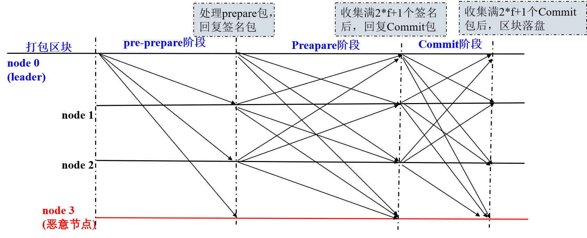

一、版本
- fisco-bcos：2.1.0
- commit：cb68124d4fbf3df563a57dfff5f0c6eedc1419cc
- branch：master
二、共识模块框架
FISCO BCOS实现了一套可扩展的共识框架，可插件化扩展不同的共识算法，目前支持 PBFT(Practical Byzantine Fault Tolerance) 和 Raft(Replication and Fault Tolerant) 共识算法，共识模块框架如下图：
Sealer线程
交易打包线程，负责从交易池取交易，并基于节点最高块打包交易，产生新区块，产生的新区块交给Engine线程处理，PBFT和Raft的交易打包线程分别为PBFTSealer和RaftSealer。
Engine线程
共识线程，负责从本地或通过网络接收新区块，并根据接收的共识消息包完成共识流程，最终将达成共识的新区块写入区块链(BlockChain)，区块上链后，从交易池中删除已经上链的交易，PBFT和Raft的共识线程分别为PBFTEngine和RaftEngine。
三、依赖模块
- sync
- blockverifier
- p2p
- security
四、共识算法模块文件结构
1 | . |
ConsensusInterface
ConsensusInterface.h作为一个基类为最顶端类包，其他类继承该类的虚函数进行override。
Class ConsensusInterface主要包含了以下两种：
- 共识模块控制
1 | // 共识模块的开关 |
- 共识节点控制
1 | // 共识节点列表 |
Common
Common.h文件主要定义了命名空间consensus的共识与节点的状态、异常处理，以及节点的类型NodeAccountType、打包成块结构体Sealing ：
1 | struct Sealing |
ConsensusEngineBase
定义了ConsensusEngineBase类，该类继承了 Woker 类和 ConsensusInterface 类：
1. 构造函数
1 | // ConsensusEngineBase类构造函数 |
2. 继承重写函数
1 | // 共识节点操作 |
3. 其他成员函数
1 | // 构造一个JSON object，内含共识的基本属性 |
4. protect属性成员
1 | std::atomic<uint64_t> m_maxBlockTransactions = {1000}; |
Sealer
定义了Sealer 类，继承 Worker ，开启shared_ptr支持。
1. 构造函数/析构函数
1 | // 构造函数 |
2. 成员函数
1 | // Sealer模块的开关 |
3. protect属性成员
1 | /// 主要参数 |
五、BCOS中PBFT模块是如何使用这些接口的
先看PBFT模块的文件结构，和共识模板相似，有common，有Engine，有Sealer。
1 | pbft |
PBFT共识主要包括Pre-prepare、Prepare和Commit三个阶段：
- Pre-prepare：负责执行区块，产生签名包，并将签名包广播给所有共识节点；
- Prepare：负责收集签名包，某节点收集满
2*f+1的签名包后，表明自身达到可以提交区块的状态，开始广播Commit包；- Commit：负责收集Commit包，某节点收集满
2*f+1的Commit包后，直接将本地缓存的最新区块提交到数据库。

Common
Common 定义了PBFT的几种消息形式：PBFTMsgPacket、PBFTMsg、PreapareReq、SignReq 、CommitReq、ViewChangeReq 。
PBFTMsgPacket定义了PBFT整个消息的属性，有发送节点的id、所在位、消息类型(prepare、commit、sign)、TTL、data、时间戳，并定义了消息的编码和解码，使用到了libdevcore的RLP类型；PBFTMsg是消息基础结构，定义了区块链高度、当前view、发送节点所在位，时间戳、区块哈希、签名等，并定义了消息的编码和解码，使用到了libdevcore的RLP类型；PreapareReq是在PBFTMsg基础上的扩展，并给出四种不同的构造方法：- 使用PBFTMsg模板，参数为keyPair、区块链高、当前view、节点所在位、区块哈希值；
- 从另一个特定的PrepareReq进行构造，参数为另一个prepareReq、keyPair、当前view、节点所在位；
- 从给定的区块、keypair、view、idx进行构造；
- 从给定区块以及执行打包结果，更新PrepareReq；
SignReq是在PBFTMsg基础上的扩展， 定义了一种构造方法，参数为PrepareReq、keyPair、idx；CommitReq是在PBFTMsg基础上的扩展，定义了一种构造方法，参数为PrepareReq、keyPair、idx；ViewChangeReq是在PBFTMsg基础上的扩展，定义了一种构造方法，参数为 keyPair、区块链高、view、idx、区块哈希；
PBFTMsgCache
定义了消息缓存的结构PBFTMsgCache，都是以消息队列的形式实现，并实现了插入缓存的方式，类成员有：
1 | /// 四种消息的缓存 |
此外，定义了广播消息缓存类 PBFTBroadcastCache ，根据发送节点id的哈希存储收到的消息缓存（hashmap）。
PBFTReqCache
定义了请求缓存类型 PBFTReqCache ，有以下成员：
1 | /// prepare请求缓存 |
此外还实现了对请求缓存进行增删改查的方法，以及判断是否要进入viewchange。
TimeManager
该模块主要作用是记录时间，设定timeout。
PBFTSealer
定义了PBFTSealer类，该类直接继承Sealer。
在继承Sealer类的同时，增加了几个新的成员变量
1 | std::shared_ptr<PBFTEngine> m_pbftEngine; // 指向特定的PBFT共识引擎 |
1. 构造函数
构造函数调用基类Sealer 的构造函数，并对PBFTSealer指向的PBFTEngine进行初始化。
1 | // 略去函数名和函数参数 |
2. 重写继承成员函数
在这里对继承的Sealer成员函数进行了重写：
1 | void start() override{ |
3. 其他重要成员函数
1 | // 回调函数 |
PBFTEngine
定义了PBFTEngine类，直接继承了共识模板 ConsensusEngineBase 类，增加了几个成员变量
1 | protected: |
1. 构造函数
构造函数调用ConsensusEngineBase 的构造函数
1 | // 略去函数名与参数部分 |
2. 其他重要函数
从PBFTSealer模块中看，Sealer 基类重写了Worker 的doWork方法，并对shouldHandle的Block进行了handleBlock，在 handleBlock 函数中调用了Engine模块的generatePrepare方法，发送Prepare消息。该方法只有leader节点才能调用。
1 | /// 生成一个PrepareReq消息块，广播出去 |
持续监听消息队列
leader广播出Prepare消息之后，其他节点进行消息接收，通过PBFTEngine::workLoop 循环从消息队列m_msgQueue接收、处理消息，m_msgQueue 消息队列在PBFTEngine构造函数初始化的时候p2p服务绑定的回调函数PBFTEngine::onRecvPBFTMessage 进行push：
1 | // workLoop是重写的Worker类的workLoop方法 |
handleMsg判断请求类型
在以上workLoop可以看出，节点循环对消息使用handleMsg方法进行处理：
1 | void PBFTEngine::handleMsg(PBFTMsgPacket const& pbftMsg) |
handleMsg执行流程图如下所示：
以下将分别讲述 handlePrepareMsg、handleSignMsg、handleCommitMsg、handleViewChangeMsg四个方法：
处理Prepare请求
1 | bool PBFTEngine::handlePrepareMsg(PrepareReq const& prepareReq, std::string const& endpoint) |
handlePrepareMsg方法的处理流程如下图所示：
处理Sign请求
1 | bool PBFTEngine::handleSignMsg(SignReq& sign_req, PBFTMsgPacket const& pbftMsg) |
handleSignMsg 方法执行流程如下所示
处理Commit请求
1 | bool PBFTEngine::handleCommitMsg(CommitReq& commit_req, PBFTMsgPacket const& pbftMsg) |
handleCommitMsg方法处理流程如下图所示：
处理ViewChange请求
1 | bool PBFTEngine::handleViewChangeMsg(ViewChangeReq& viewChange_req, PBFTMsgPacket const& pbftMsg) |
handleViewChangeMsg 处理流程如下图所示：
checkAndCommit
checkAndCommit方法会在handlePrepareMsg和handleSignMsg 两个方法中调用，用于确定是否达到2/3，是否可以进行下PREPARE阶段的消息传递。
1 | void PBFTEngine::checkAndCommit() |
checkAndSave
checkAndSave方法会在handleCommitMsg方法中调用，用于确定 SignReq 和 CommitReq 这两个请求都到达2/3，且view和高度height都正确，那么就可以加入到区块中，进行落盘。
1 | void PBFTEngine::checkAndSave() |
checkAndChangeView
checkAndChangeView在共识过程中出现leader timeout checkTimeout或主动进行view change handleViewChangeMsg时进行调用。
1 | void PBFTEngine::checkAndChangeView() |